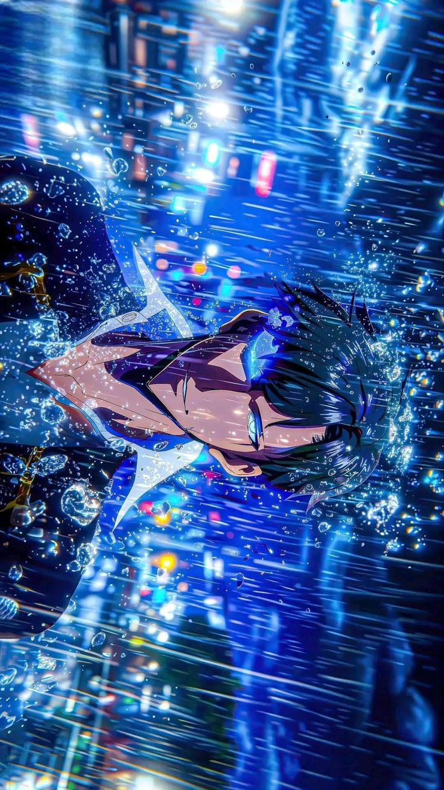
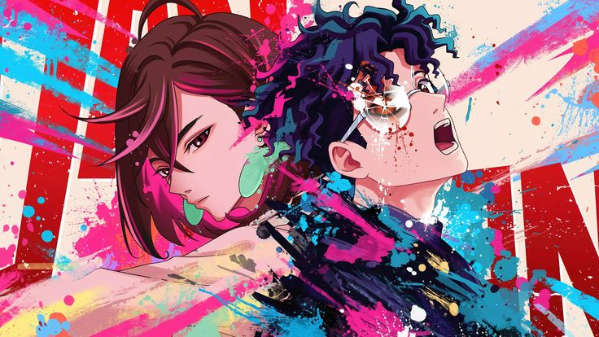
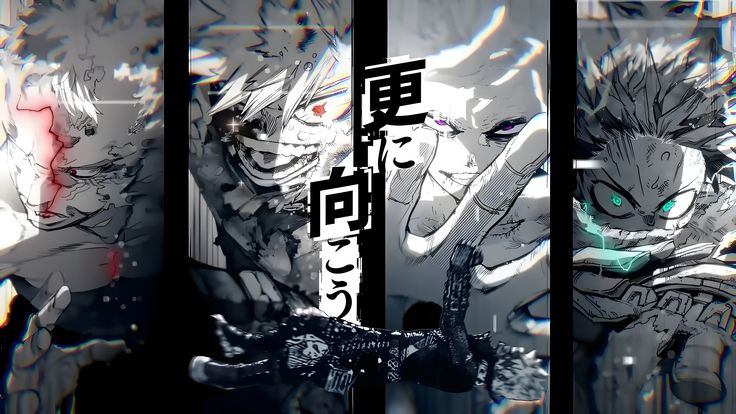
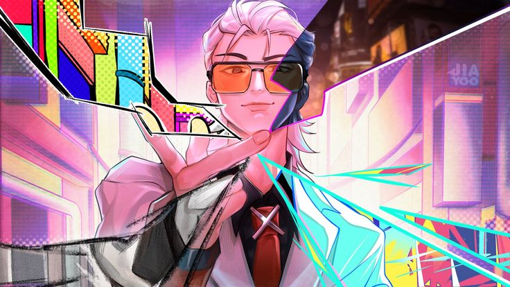
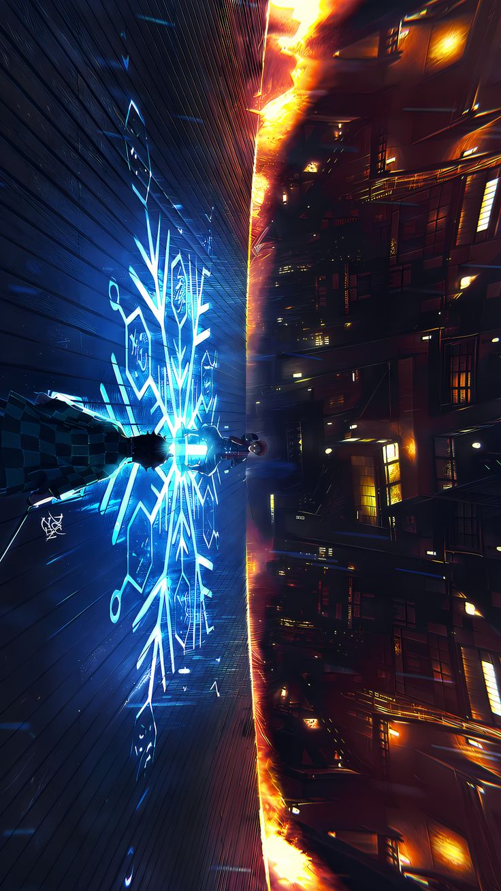
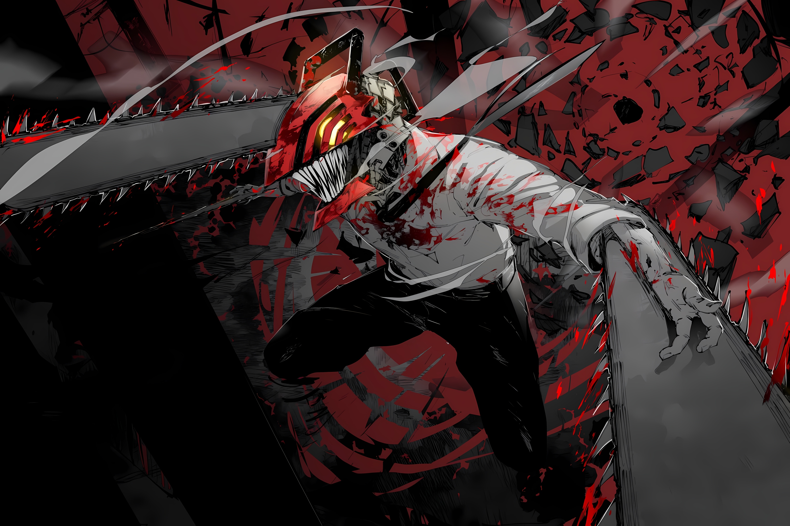
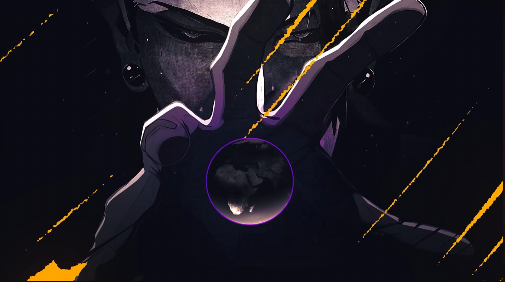
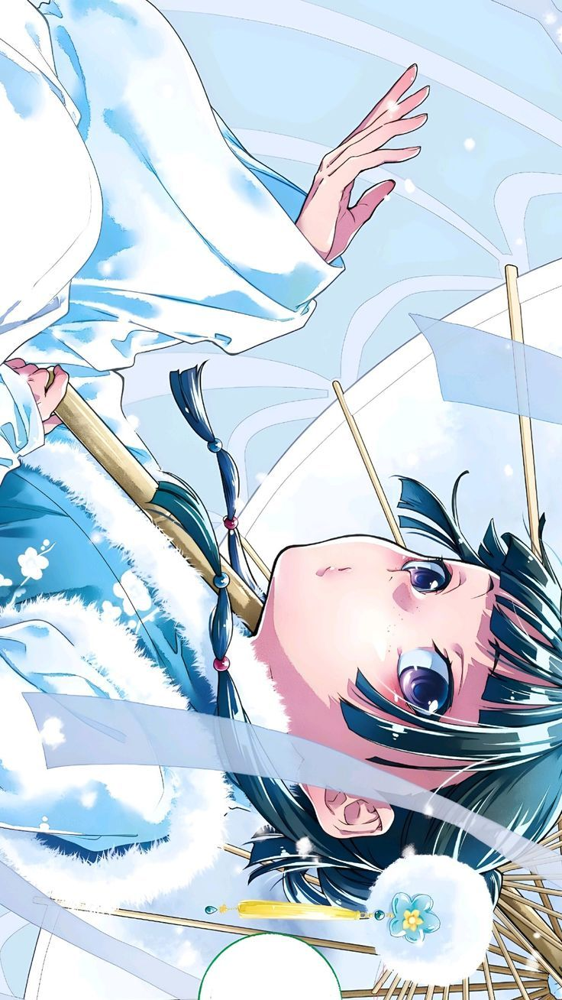
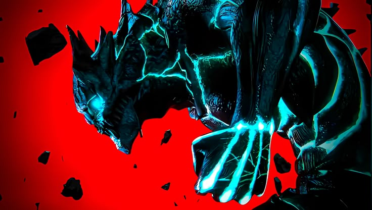

Os melhores animes de 2025 incluem continuações de sucesso como Solo Leveling (Season 2), DanDaDan (Season 2) e My Hero Academia (Final), além de destaques como To Be Hero X e outros fenômenos de bilheteria como Demon Slayer: Castelo Infinito e o filme de Chainsaw Man: Arco da Reze, consolidando um ano de grandes adaptações e desfechos, disponíveis em plataformas como Crunchroll, Netflix e Prime Video!
Solo Leveling: Season 2

A 2ª temporada de Solo Leveling continua a jornada de Sung Jin-woo, adaptando o arco do "Retorno ao Castelo Demoníaco", onde ele aprofunda seus poderes de Monarca das Sombras, enfrenta inimigos formidáveis e descobre mais sobre os segredos do Sistema, com destaque para a reviratação na Ilha Jeju e a ascensão de Beru.
DandaDan: Season 2

DanDaDan 2 temporada continua com a aventura de Momo, Aira, Okarun e Jiji continua com o arco da Casa Amaldiçoada, no qual os jovens devem enfrentar no qual os jovens devem enfrentar poderosas maldições e Jiji precisa se livrar do espírito que assombra a sua casa.
My Hero Academia - Final Season

A oitava e última temporada da série de anime My Hero Academia, focando na Guerra Final entre heróis e vilões, com batalhas épicas de Deku, Bakugo e All Might contra All For One e shigaraki, Culminando na derrota de All For One e no destino do mundo.
To Be Hero X

To Be Hero X é um aclamado donghua (animação chinesa) de ação e fantasia que explora um mundo onde heróis ganham poderes da confiança pública, sendo ranqueados por um índice de fé, com o "#1" sendo o "Herói X".
Demon Slayer: Castelo infinito

Demon Slayer: Castelo Infinito (Infinity Castle Arc) é a continuação épica que leva Tanjiro e os Hashiras para a dimensão do vilão Muzan, o Castelo Infinito, para a batalha final contra os demônios, após o traiçoeiro ataque de Muzan à Mansão Ubuyashiki durante o Treinamento dos Hashiras, onde os heróis são transportados para esse labirinto demoníaco para um confronto decisivo.
Chainsaw Man: Arco da Reze

O Arco da Reze em Chainsaw Man é um filme canônico que continua a história de Denji após a primeira temporada, focando em seu romance com a misteriosa Reze, uma garota que ele conhece em um café e que, na verdade, é o Demônio Bomba, resultando em uma batalha épica e uma profunda exploração do desejo de Denji por uma vida normal e amorosa.
Jujutsu Kaisen: Execução

Jujutsu Kaisen: Execução é um filme compilatório que reconta o Arco do Incidente em shibuia, servindo como ponte para a 3ª temporada do anime, e foca no início do Jogo do Abate, introduzindo o conflito de Yuta Okkotsu com Yuji Itadori e os planos de Kenjaku, destacando visuais intensos e a missão de execução.
Diários de uma Apotecária

"Diários de uma Apotecária" (The Apothecary Diaries) é uma popular série de anime, mangá e light novel sobre Maomao, uma jovem apotecária sequestrada e forçada a trabalhar no palácio imperial, onde usa seu conhecimento em medicina e venenos para desvendar mistérios e intrigas da corte, tornando-se a "detetive" relutante do Pátio Interno, com o apoio do belo e misterioso eunuco Jinshi.
Kaiju No. 8

Kaiju nº 8 (ou Kaiju No. 8) é um mangá e anime sobre Kafka Hibino, um homem que sonha em entrar para a Força de Defesa contra monstros gigantes (Kaijus), mas acaba trabalhando na limpeza de seus restos, até que um dia, após um encontro, ele ganha a habilidade de se transformar em um poderoso Kaiju, precisando agora lutar contra os monstros enquanto esconde sua identidade secreta.
Gachiakuta
Gachiakuta é um mangá e anime shonen de fantasia sombria sobre Rudo, um garoto marginalizado em uma cidade flutuante, que é injustamente acusado de assassinato, jogado no "Abismo" (um lixão habitado por monstros de lixo) e descobre um poder para transformar lixo em armas, buscando vingança e lutando por um lugar em um mundo dividido entre ricos e desfavorecidos, explorando temas como valor, sociedade e resíduos com uma arte única e elementos de ação e mistério.
Para assistir animes e mais acesse: Crunchroll, Netflix ou Prime Video